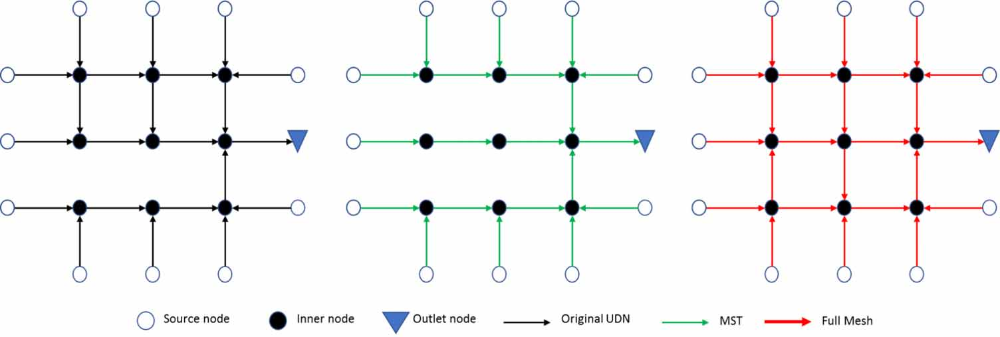
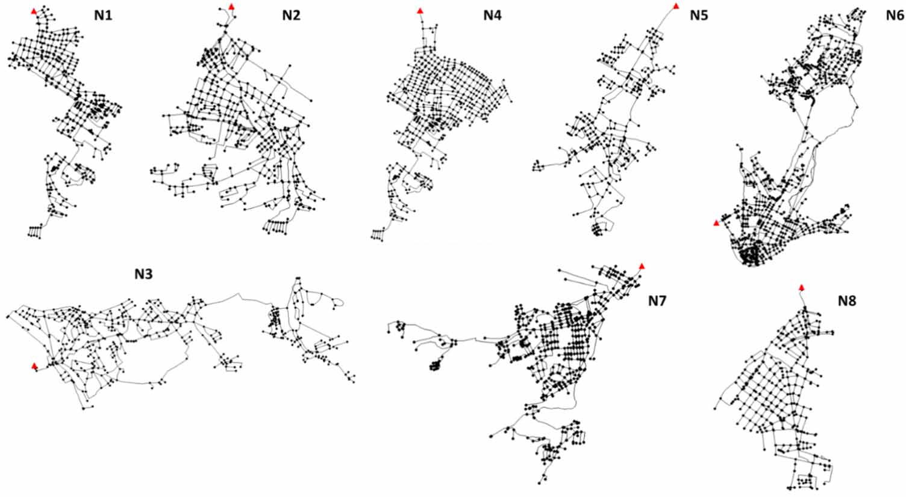
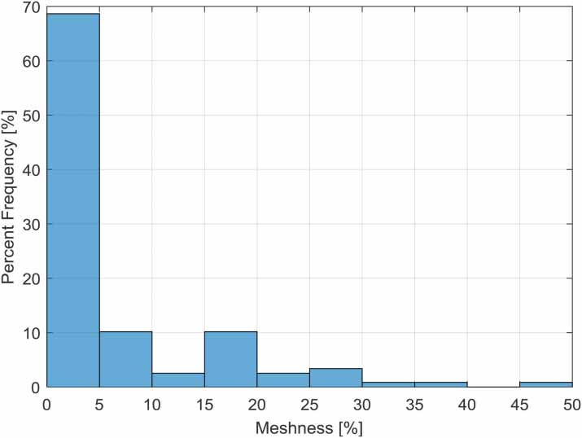
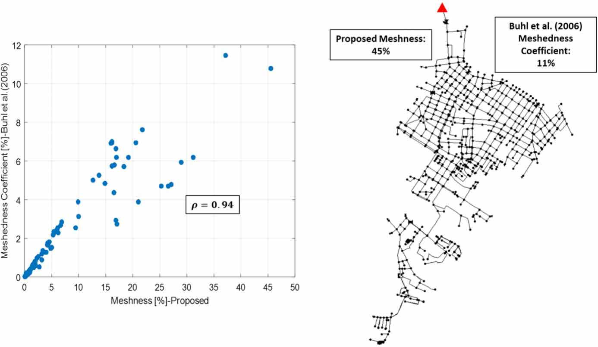
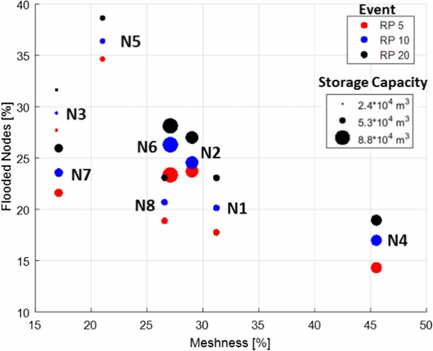
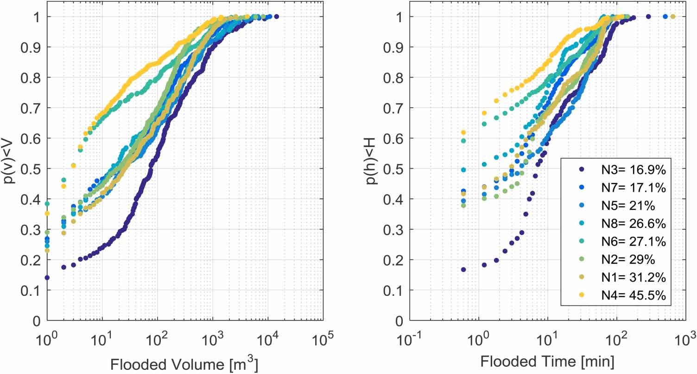
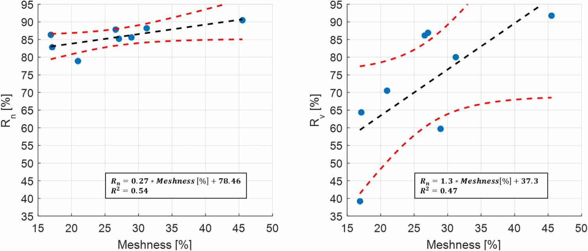

Meshness of sewer networks and its implications for flooding occurrence
[doi] urban-drainagegraph-theorysewer-networksflood-reliabilitynetwork-topologynetwork-resilience
Meshness of Sewer Networks and Its Implications for Flooding Occurrence
Authors: Julian David Reyes-Silva, Björn Helm, Peter Krebs Year: 2020 Tags: urban-drainage, graph-theory, network-topology, flood-reliability, sewer-systems, redundancy
TL;DR
Introduces "Meshness," a graph-theoretic metric quantifying how tree-like vs. grid-like a urban drainage network (UDN) layout is, based on the average total degree of inner nodes relative to its minimum spanning tree and a fully-connected bound. Applying it to 118 networks shows ~69% are nearly branched (Meshness <5%), and simulations across 8 Dresden subnetworks show higher Meshness correlates with fewer, smaller, and shorter flood events, suggesting meshed topology as a redundancy-enhancing design strategy.
First pass — the five C's
Category. Research prototype: new metric introduced and tested on an empirical/simulation case study.
Context. Urban drainage network reliability and graph-theoretic structural analysis. Builds on: Buhl et al. (2006) — meshedness coefficient for planar street/water-supply graphs (direct predecessor, explicitly critiqued and replaced); Zhang et al. — tree vs. loop UDN vulnerability to pipe blockage; Lee & Kim — reliability indexes Rn and Rv for flooded nodes and volumes (equations adopted directly); Yazdani & Jeffrey — network-theory redundancy analysis for water distribution systems.
Correctness. Three load-bearing assumptions are asserted without derivation: (1) a linear mapping from Average Total Degree (ATD) to Meshness between MST and fully-meshed bounds is assumed; (2) the upper bound of 4 connections per inner node is imposed by construction-practice judgment, not validated against the 118 networks; (3) catchment areas are equalized to 4.85 km² across all 8 study networks, artificially decoupling network design from its real catchment load (the paper itself flags N5 as overcapacitated as a result). These assumptions are plausible but are acknowledged only partially.
Contributions. - New "Meshness" coefficient based on ATD of inner nodes (K > 1), computed via linear interpolation between the network's MST (0%) and a fully connected (ATD = 4, 100%) bound, avoiding the triangular-loop underestimation problem of Buhl et al. - Prevalence analysis of 118 UDNs from 32 cities: 82/118 (≈69%) have Meshness <5%; no network in the dataset is predominantly meshed. - Empirical demonstration that Meshness is inversely associated with flood occurrence: volume reliability (Rv) rises 1.3% and node reliability (Rn) rises 0.27% per 1% increase in Meshness (both significant at p < 0.05, R² ≈ 0.7). - Framing Meshness as a surrogate for structural redundancy, opening a new design/mitigation angle for UDN rehabilitation.
Clarity. Well-structured and readable; the Meshness derivation is illustrated step-by-step with a worked example, though the justification for key assumptions (linear interpolation, degree-4 cap) is presentational rather than theoretical.
Second pass — content
Main thrust: Meshness quantifies the fraction of a UDN's layout that is grid-like rather than tree-like; simulations of 8 Dresden subnetworks under 5-, 10-, and 20-year design storms show that networks with higher Meshness flood less frequently, and when they do flood, produce smaller volumes and shorter durations.
Supporting evidence: - 82 of 118 networks (≈69%) have Meshness <5%; only 7 exceed 25%; none is predominantly meshed. - At the 10-year return period, the 80th-percentile flood volume is ≤30 m³ for N4 (Meshness = 45.5%) vs. ≈400 m³ for N3 (Meshness = 16.9%) — roughly one order of magnitude difference. - Total simulated flood volumes: N4 = 4,230 m³; N3 = 14,280 m³ (10-year RP). - 80th-percentile flood duration: N4 < 6 min; N3 ≤ 30 min (10-year RP). - Rv ranges from 39% (lowest Meshness) to 92% (highest Meshness); Rn ranges from approximately 75–95% across the same span; linear regressions significant at p < 0.05 with R² ≈ 0.7 for both. - Pearson correlation between Meshness and Buhl's meshedness coefficient: ρ > 0.9, but Buhl's metric consistently underestimates (N4: Buhl = 11%, Meshness = 45%).
Figures & tables: - Figure 3 (Meshness frequency histogram for 118 UDNs): axes labeled; no confidence intervals needed for a count distribution; clearly shows the right-skewed, near-zero concentration. - Figure 4 (Meshness vs. Buhl's coefficient scatter + N4 layout): axes labeled, Pearson ρ reported; no uncertainty bounds on the correlation. - Figure 5 (Meshness vs. % flooded nodes for 3 return periods, marker size ∝ storage capacity): useful encoding of a confound; no error bars or statistical significance shown; 8 points per RP panel is thin. - Figure 6 (empirical CDFs of flood volumes and durations, 10-year RP): color-coded by network/Meshness; no confidence bands on the CDFs; patterns are visually clear. - Figure 7 (Rn and Rv vs. Meshness with linear fit and 95% prediction intervals): the key quantitative figure; prediction intervals are shown; p-values reported; but n = 8 means intervals are very wide. - Table 2: complete physical characteristics of 8 subnetworks; no uncertainty on model parameters.
Follow-up references: - Zhang et al. — tree vs. loop UDN vulnerability to pipe blockage (closest structural-reliability predecessor for UDNs). - Lee & Kim — source of the Rn/Rv reliability index equations used here; details their derivation and validation. - Buhl et al. (2006) — meshedness coefficient for planar graphs; understanding its limitations is essential to evaluating the Meshness improvement. - Yazdani & Jeffrey — network-theory redundancy quantification for water supply; provides the conceptual framing the authors borrow.
Third pass — critique
Implicit assumptions: - Linear ATD–Meshness mapping: no theoretical or empirical basis is given; a nonlinear relationship could substantially change which networks are classified as meshed vs. branched. - Degree-4 upper bound: justified by "topographic and construction restrictions," but the 118-network dataset is never mined to verify that no inner node exceeds degree 4; if degree-5+ nodes exist, the 100% anchor is wrong. - MST by pipe length = minimum connectivity: pipe length proxies travel time only under uniform flow velocity; networks with steep vs. flat slopes violate this, and slope varies substantially across the 8 subnetworks (0.71%–2.11%). - Catchment equalization preserves comparability: explicitly acknowledged to break N5; more broadly, it removes the design-load coupling that determined each network's pipe sizes, making simulated overloading artifacts of the methodology rather than topology. - Impervious-only runoff: ignoring infiltration may systematically overstate flooding in lower-Meshness networks if their catchments have more pervious cover in reality.
Missing context or citations: - Lee et al. (2018) — drainage density and stormwater network structure — is cited but no quantitative comparison between drainage density and Meshness is provided; the metrics may partially overlap. - The confound between Meshness and storage capacity is explicitly noted (Supplementary Data 2 shows correlation) but no partial regression or analysis of covariance controlling for storage is attempted; the claim that Meshness drives reliability rather than storage is asserted, not demonstrated. - No engagement with literature on sewer network design optimization (e.g., least-cost layout), which directly addresses the branched vs. looped tradeoff the paper motivates. - Cost implications of increasing Meshness are mentioned as future work but no relevant economic literature is cited.
Possible experimental / analytical issues: - n = 8 for all statistical inference: with 8 data points, R² ≈ 0.7 and p < 0.05 are achievable with a single outlier; the 95% prediction intervals in Figure 7 are correspondingly wide, yet the slopes (0.27%/% and 1.3%/%) are reported as meaningful quantitative findings. - Single-city bias: all 8 functional-analysis networks are from Dresden, Germany; any shared design conventions, soil conditions, or pipe-sizing standards become confounds that cannot be separated from topological effects. - Meshness range tested is narrow for functional analysis: the 8 networks span Meshness ≈ 17%–45%; the paper itself acknowledges that the most common topology (Meshness <5%, 69% of the 118 networks) is absent from the flooding analysis. - Design storm selection: Euler Type II, 1-hour, 5–20 year return periods may not excite all flood-generating mechanisms; longer-duration storms or real precipitation series could produce different Meshness–flood relationships. - CSO removal and storage tank conversion alter the hydraulic system in ways that may disproportionately affect some networks over others; no sensitivity analysis on this normalization is presented. - No ablation separating flow-path vs. storage effects: the two mechanisms proposed (alternative flow paths, additional storage) are confounded by construction; the paper acknowledges this but does not resolve it.
Ideas for future work: 1. Design synthetic networks with matched total pipe length and storage capacity but varying topology (branched vs. meshed) to isolate the flow-path redundancy effect from the storage-volume effect. 2. Extend the functional analysis to networks from multiple cities and covering the full Meshness range (particularly <5%), using real precipitation time series rather than design storms. 3. Formulate a cost–benefit optimization: for a given flood-reliability target, determine the minimum number of added pipes (Meshness increment) and their locations, then benchmark against traditional storage-tank strategies. 4. Investigate nonlinear or threshold Meshness effects by fitting piecewise or nonparametric models to a larger dataset, testing whether the linear reliability–Meshness relationship holds outside the narrow 17–45% range studied here.
Figures from the paper







Methods
- Meshness coefficient (novel graph-theory metric)
- Minimum Spanning Tree via Kruskal's algorithm
- EPA SWMM hydrodynamic simulation
- Euler Type II design storms
- linear regression
- reliability indexes Rn and Rv
- Cytoscape network analysis
Datasets
- 118 urban drainage networks from 32 cities across Europe, North America, South America, and Asia
- Dresden sewer system (8 subnetworks)
Claims
- Approximately 69% of analyzed urban drainage networks have branched or predominantly branched topologies with Meshness values below 5%.
- Node flooding events are less likely to occur in UDNs with higher Meshness values, and when they do occur they have shorter durations and smaller volumes.
- The proposed Meshness coefficient more adequately characterizes UDN topology than the existing 'meshedness coefficient' by Buhl et al., which systematically underestimates meshed structure.
- Reliability against flood volumes increases by approximately 1.3% per percent increase in Meshness, while reliability against flooded node count increases by only 0.27% per percent Meshness.
- Meshness can be interpreted as a measure of redundancy in UDNs, suggesting that promoting meshed layouts is a viable strategy for improving drainage reliability.